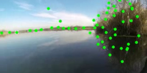
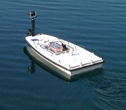

Welcome to IntCatch AI
A collection of Artificial Intelligence algorithms for small and low-cost Autonomous Surface Vehicles (ASVs).

We developed and tested different algorithms for our autonomous navigating platform, including
- Image stabilization
- Optical flow
- Visual odometry
- Image segmentation
- Object detection
System
IntCatch AI collects algorithms and data used in the context of the HORIZON2020 project IntCatch.
Algorithms
Different approaches have been developed to allow our boat to anavigate autonomously in challenging scenarios.
Data
A camera has been mounted on our boat to collect visual data at different resolutions and frame rates.
